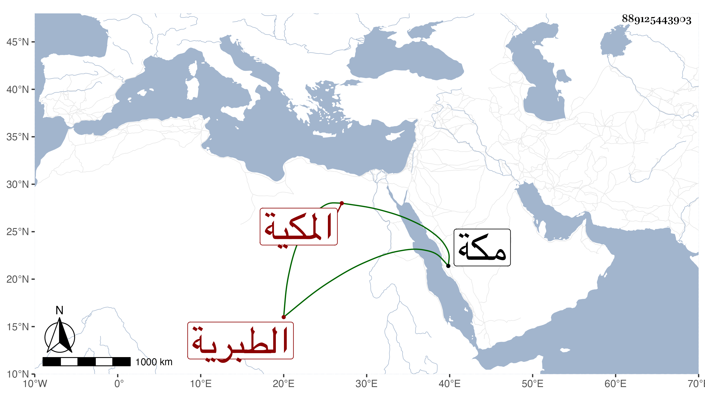

0902Sakhawi.DawLamic.ITO20230111-ara1.EIS1600.889125443903
Biography ID: 889125443903
171
خديجة المدعوة توفيق ابنة الزين محمد بن الزين أحمد بن الجمال محمد بن المحب أحمد بن عبد الله أم خليل الطبرية المكية ؛ أمها غصون الحبشية فتاة أبيها . سمعت من ابيها والكمال بن حبيب وأجاز لها في سنة تسع وستين وسبعمائة وما بعدها جماعة . وتزوجها أبو عبد الله محمد بن الشيخ أبي العباس بن عبد المعطي وفارقها فلم تتزوج حتى ماتت . وكانت وفاتها قريبا من سنة عشرين بمكة . ذكرها الفاسي وغيره .
